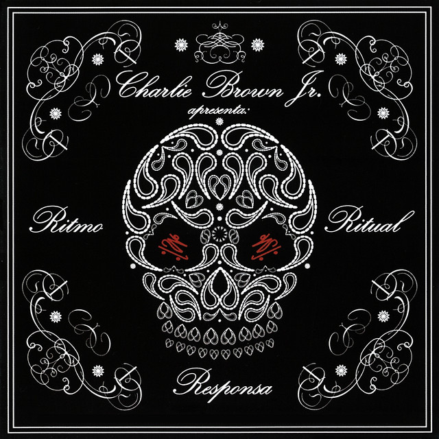

|
|
 |
 |
 |
Ao longo das últimas duas décadas, a banda brasileira Charlie Brown Jr. deixou uma marca indelével na história da música brasileira, consolidando-se como um dos principais expoentes do rock nacional. Com uma mistura única de rap, reggae, rock e skate culture, a banda cativou uma geração inteira com suas letras marcantes e sua atitude irreverente.
Formada em 1992 na cidade de Santos, São Paulo, por Chorão (Alexandre Magno Abrão), vocalista carismático e emblemático líder da banda, e Champignon (Luiz Carlos Leão Duarte Junior), baixista talentoso, o Charlie Brown Jr. rapidamente ganhou reconhecimento no cenário underground com suas apresentações explosivas e letras que refletiam a realidade das ruas e das camadas menos privilegiadas da sociedade.
O primeiro álbum da banda, "Transpiração Contínua Prolongada", lançado em 1997, foi um marco, catapultando-os para a cena mainstream. Canções como "Proibida Pra Mim" e "O Coro Vai Comê!" se tornaram hinos de uma geração e garantiram ao Charlie Brown Jr. um lugar de destaque no cenário musical brasileiro.
A ascensão meteórica da banda não foi isenta de turbulências. Conflitos internos, trocas de membros e problemas pessoais afetaram periodicamente o grupo. No entanto, a resiliência e a paixão pela música mantiveram o Charlie Brown Jr. em constante evolução.
Em 2005, o trágico falecimento do guitarrista Champs abalou não apenas a banda, mas também milhares de fãs ao redor do país. No entanto, o legado musical da banda persistiu, e o Charlie Brown Jr. continuou a se reinventar, lançando álbuns aclamados pela crítica, como "Ritmo, Ritual e Responsa" e "Camisa 10 Joga Bola Até na Chuva".
 |
 |
Em 2013, outra perda devastadora abalou os alicerces da banda, com a morte prematura de Chorão. Sua ausência deixou um vazio irreparável na cena musical brasileira, mas sua influência perdura até hoje.
Apesar das tragédias e das adversidades, o Charlie Brown Jr. continua a inspirar gerações com sua música autêntica e sua mensagem de resistência e autenticidade. Seu impacto transcende fronteiras e permanece vivo nas memórias e nos corações dos fãs, garantindo um lugar eterno na história da música brasileira.